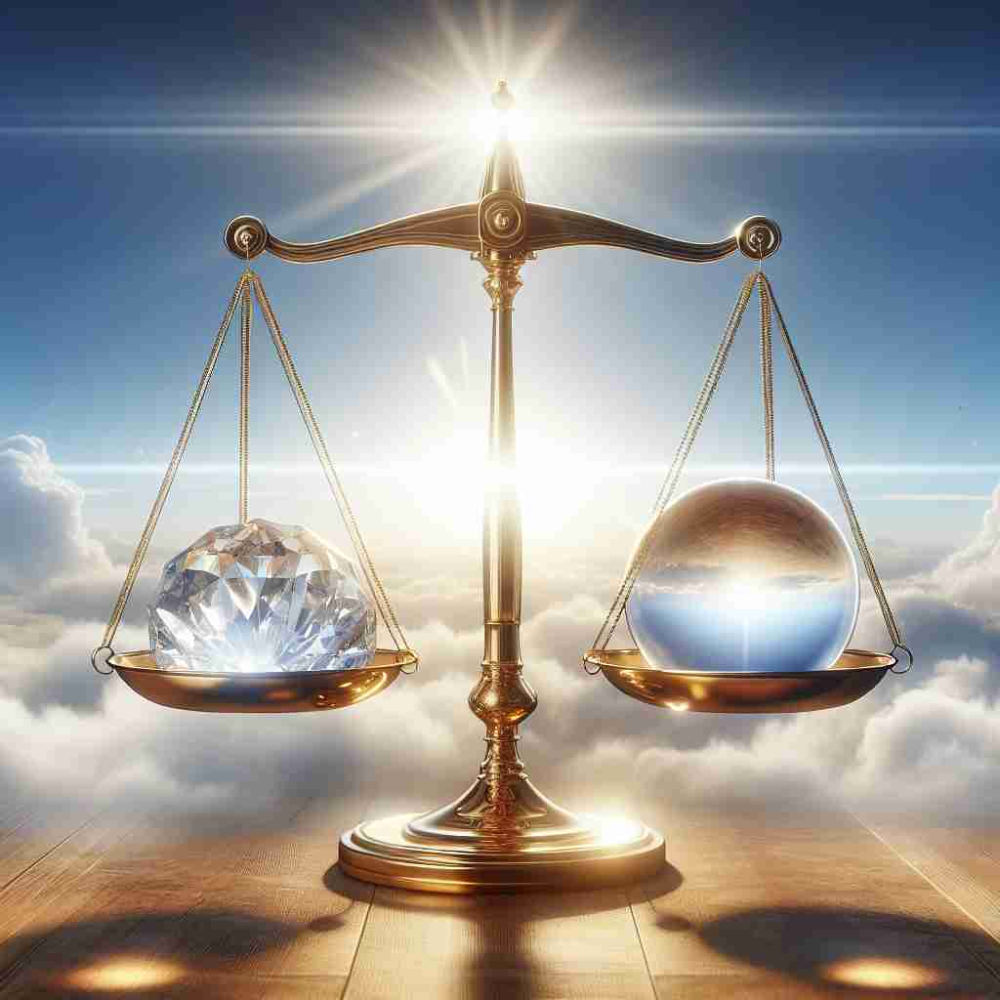

🗝️ n. the quality or state of being true or real
🖼️ 在一个科学实验室里，科学家们正在进行一项重要的实验。经过多次验证，他们终于得出了一个不可动摇的结论。主持实验的科学家坚定地说：'我们的发现证明了这一理论的真实性。'这个场景展示了'truth'作为真实或现实状态的含义。
🔍 想象'truth'是一面能反映真实世界的镜子。这面镜子不仅能映照出客观事实，还能反映人的品格、艺术的本质和对信念的忠诚。无论在哪种情况下使用'truth'，都可以联想到这面映照真实的镜子，帮助你更好地理解和记忆这个词的多重含义。

💬 The boy decided to speak the truth about what happened.

💬 The scientists are searching for the truth in science through their experiments.
💬 In the courtroom, witnesses must always tell the truth.

💬 The scale shows a balance of truth between the diamond and the sphere.
🗝️ n. a fact or belief that is accepted as true
🖼️ 在一个历史研讨会上，讲师正在展示一个被广泛接受的历史事实。观众们聚精会神地听着，点头表示认可，显示了'truth'作为被接受的事实或信念的含义。
💬 Scientific truths are based on empirical evidence.
❓ 从"真实性"延伸到具体的"真实事物"
🗝️ n. honesty or sincerity
🖼️ 在一个客厅的沙发上，两个好朋友正在进行深入的谈话。其中一位坦诚地表达了自己的感受和担忧，另一位朋友微笑着点头，感受到对方的诚实与真心。这个场景展示了'truth'作为诚实或真诚的含义。
💬 I admire her for her truth and integrity.
❓ 真实性体现在人的品格上
🗝️ n. accurate or realistic representation
🖼️ 在一个画家的工作室里，一幅新画刚刚完成。画面逼真地描绘了一位老人脸上的每一个细节，甚至眼神中流露的情感。参观者赞叹道：'这幅画非常逼真！'这展示了'truth'作为准确或现实表现的含义。
💬 The novel captures the truth of life in the countryside.
❓ 真实性在艺术或表达中的体现
🗝️ n. loyalty or faithfulness
🖼️ 在一个古老的城堡中，一位骑士跪在国王面前，发誓永远效忠于王国。国王满意地点头，承认骑士的忠诚。这个场景展示了'truth'作为忠诚或忠实的含义。
💬 He pledged his truth to the cause.
❓ 对真实性的坚持延伸为忠诚
🗝️ n. conformity to fact or reality
🖼️ 在一个法庭上，目击者在法官和陪审团面前宣誓，他的证词要符合事实与现实。他的诚实成为判决的重要依据。这个场景展示了'truth'作为符合事实或现实的含义。
💬 The truth of his statement was confirmed by witnesses.
❓ 真实性体现为与事实的一致性